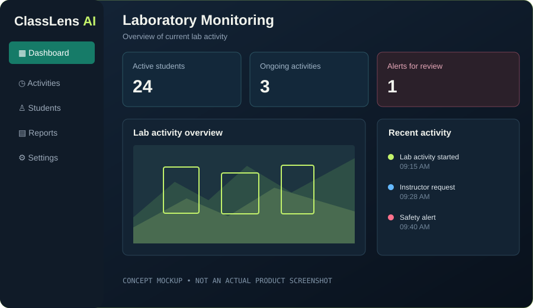

01
HTML & CSS
Learning to structure web pages and style them with layouts, typography, color, and responsive design.
STUDENT PORTFOLIO / 2026
Hi, I'm-Ryan G. Arias Jr. — a BSIT student learning to build for the web and exploring the world of cybersecurity, one skill at a time.
STUDENT / FUTURE CYBER EXPLORER
01 / ABOUT ME
I'm an Information Technology student who enjoys discovering how digital things work — from the code behind a website to the systems that help keep it secure.
I'm currently building my foundations in HTML and CSS while developing my interest in cybersecurity. I'm at the beginning of my journey, and I see every lesson and project as a chance to ask better questions, practice new skills, and improve.
My mindset
Stay curious. Keep practicing. Build responsibly.
02 / WHAT I'M LEARNING
Learning to structure web pages and style them with layouts, typography, color, and responsive design.
Exploring security concepts and how systems can be understood, tested, and protected through ethical practice.
The goal is progress, not perfection.
Learning something new every day.
↘03 / SELECTED WORK
A featured academic project that reflects my interest in technology and practical problem-solving.

CLASS PROJECT · CEBU EASTERN COLLEGE, INC.
An Intelligent Laboratory Activity Monitoring and Automated Instructor Assistance System
An academic project focused on exploring how AI-supported tools could assist with laboratory activity monitoring and instructor workflows at Cebu Eastern College, Inc.
Project description is a summary of the title. Add your actual contribution, project screenshot, and a working project link here when available.
04 / CONTACT
I'm always open to learning, sharing ideas, and connecting with people who are interested in technology.
Email me ↗